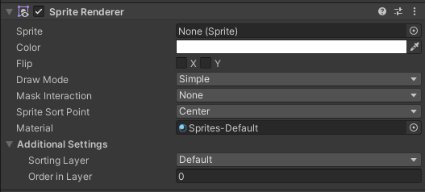
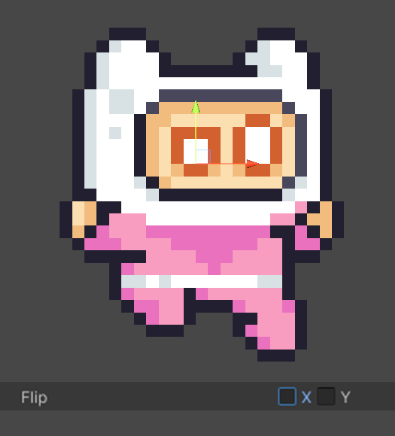
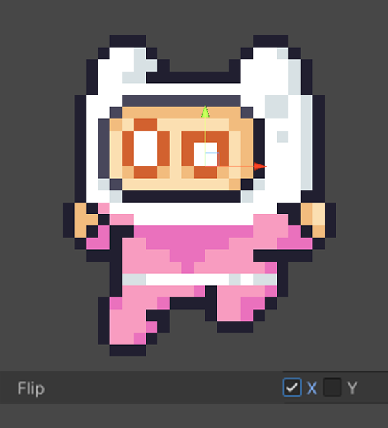

Unity基础组件教程-SpriteRenderer
Unity基础组件教程-SpriteRenderer
一、SpriteRenderer

1、Sprite:要渲染的精灵。
2、Color:为精灵图形渲染颜色。
3、FilpX和FlipY:在相应轴上反转精灵。
|  |  |
|---|
4、Draw Mode: 精灵渲染器的当前绘制模式。
5、Mask Interaction:指定精灵如何与遮罩交互。
6、Sprite Sort Point:指定精灵排序时使用的参考点。
7、Material:指定精灵的渲染材质。材质控制了精灵的外观，包括颜色、透明度、光照和其他视觉效果。
8、Additional Settings:
Sorting Layer:指定精灵所在的排序层。排序层决定了精灵的渲染顺序，相同排序层内的精灵可以通过Order in Layer来进一步排序。
Order in Layer:在同一排序层内定义精灵的渲染顺序。数值越大，精灵越靠前渲染。
二、Draw Mode
1、Simple:默认选项；精灵图像按照其原始尺寸进行绘制；不进行任何缩放或切割操作；适用于需要以原始尺寸显示的精灵。
2、Sliced:主要用于九宫格切片；适合需要拉伸但保持边缘不变形的图像，例如UI按钮或面板；精灵图像被分割成9个部分：四个角、四条边和中间部分；通过调整中间部分的尺寸，边缘部分保持不变，从而实现无失真的缩放效果；需要精灵图像设置九宫格边界（Sprite Editor中的Border属性）。
3、Tiled:图像在其边界内进行重复平铺；适用于需要重复模式的背景或图案。；精灵图像不会被拉伸，而是重复绘制以填充给定区域；平铺图像的大小可以通过调整组件的大小来控制。
每个选项适用于不同的使用场景：
- Simple适用于固定尺寸的精灵，不需要任何特殊的处理。
- Sliced适用于UI元素和其他需要动态调整大小但保持边缘完整性的对象。
- Tiled适用于背景和需要重复模式的图案。
通过选择合适的Draw Mode，可以更好地控制精灵的渲染效果，满足不同的游戏需求。
三、Mask Interaction
- None（无）：
- 精灵不受任何遮罩影响。
- 无论遮罩如何设置，精灵始终完全可见。
- Visible Inside Mask（遮罩内可见）：
- 只有位于遮罩内的部分精灵可见。
- 位于遮罩外的部分将被剪裁，不会显示。
- Visible Outside Mask（遮罩外可见）：
- 只有位于遮罩外的部分精灵可见。
- 位于遮罩内的部分将被剪裁，不会显示。
四、Sprite Sort Point
- Center（中心点）
- 使用精灵的中心点进行排序。
- 中心点是精灵矩形边界的几何中心。
- Pivot（枢轴点）
- 使用精灵的枢轴点进行排序。
- 枢轴点是你在精灵的
Sprite Editor中设置的点，可以是精灵矩形边界的任何位置，通常是左下角、右上角、中心或自定义位置。
本博客所有文章除特别声明外，均采用 CC BY-NC-SA 4.0 许可协议。转载请注明来自 Ackow！
相关推荐


评论